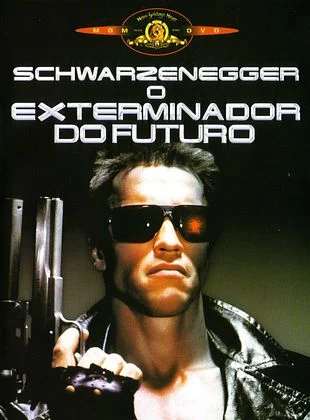
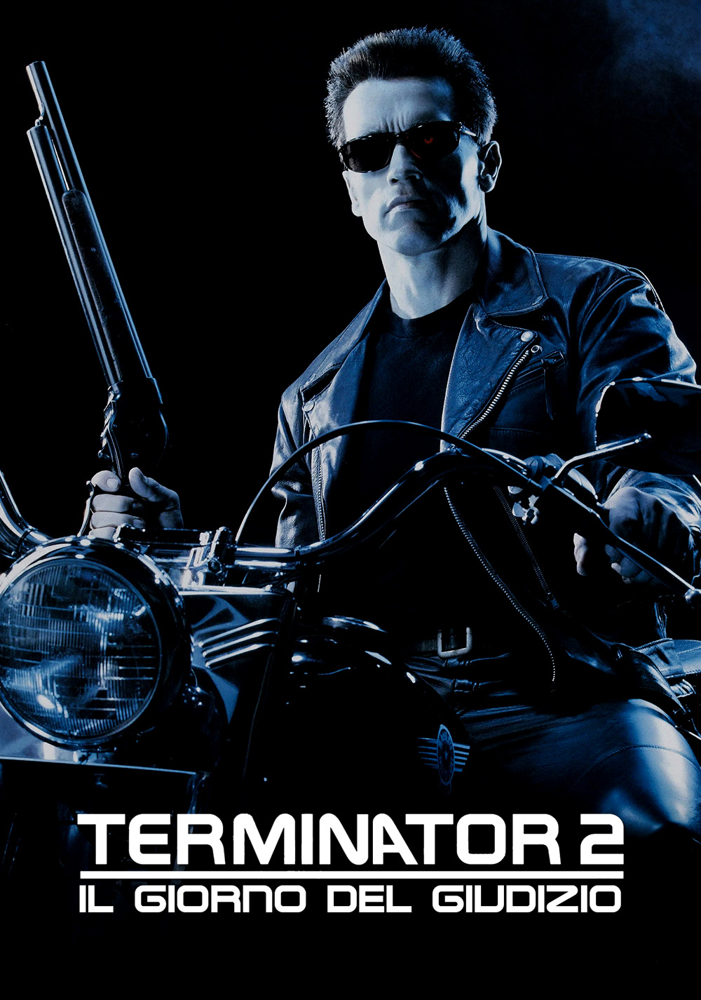
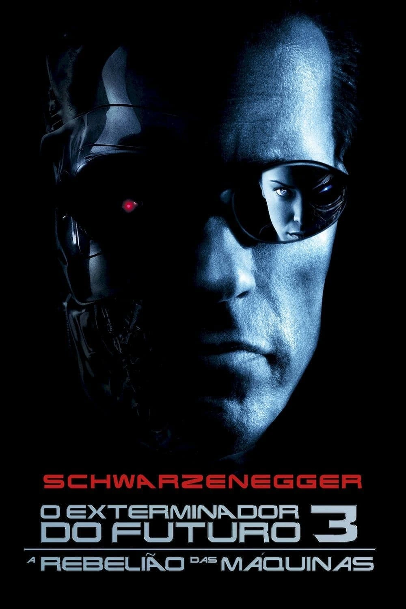
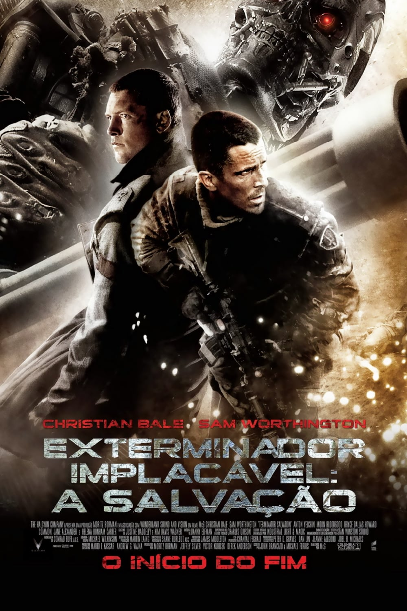
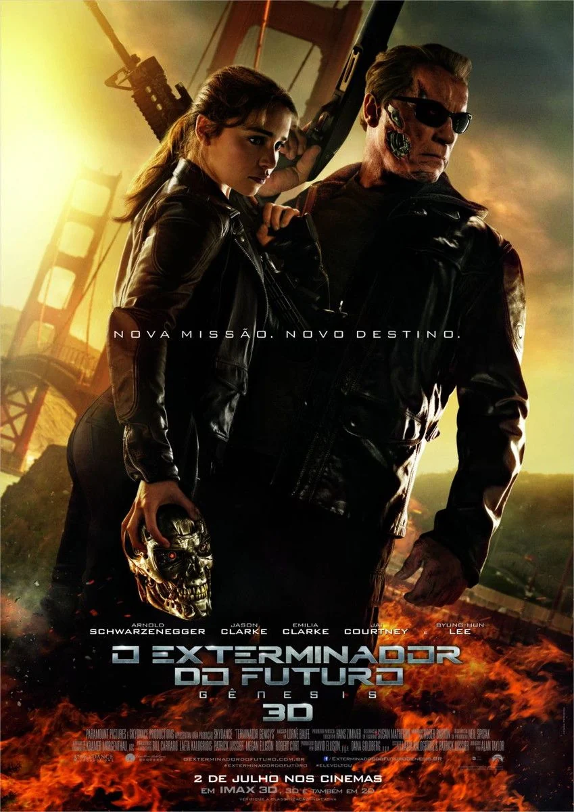
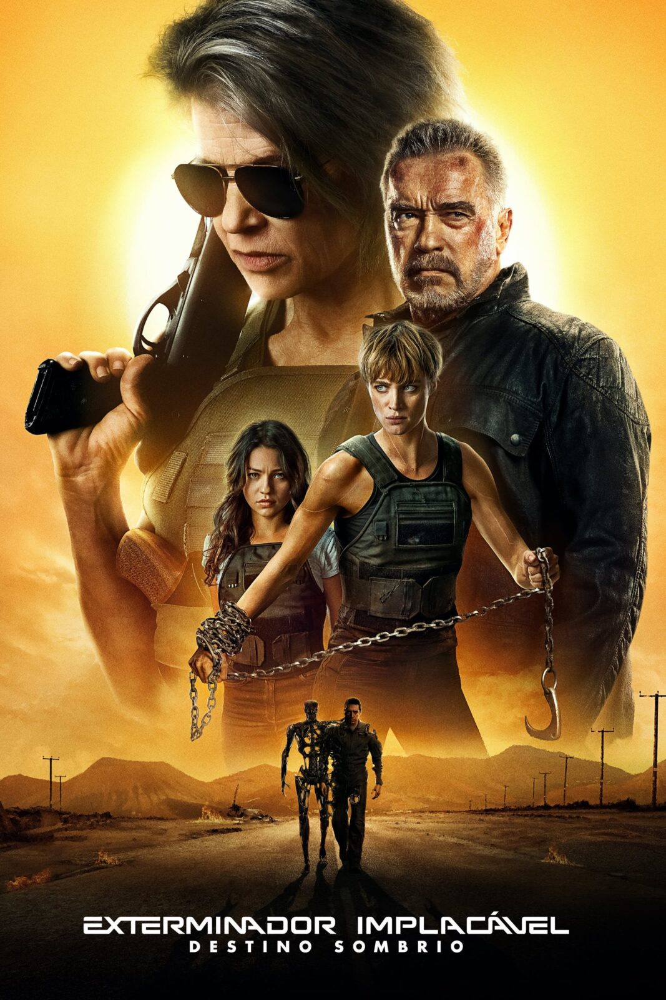
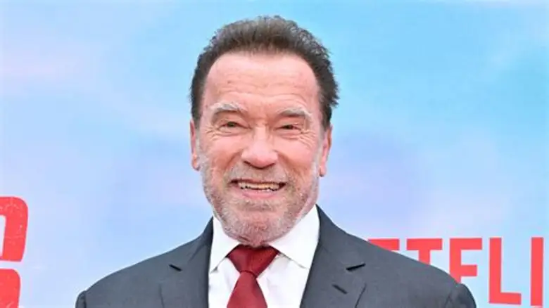
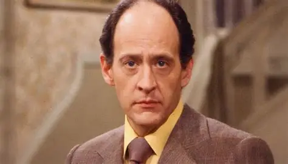
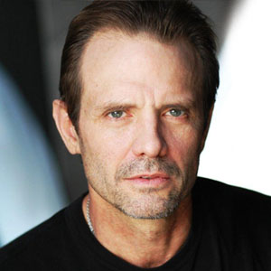
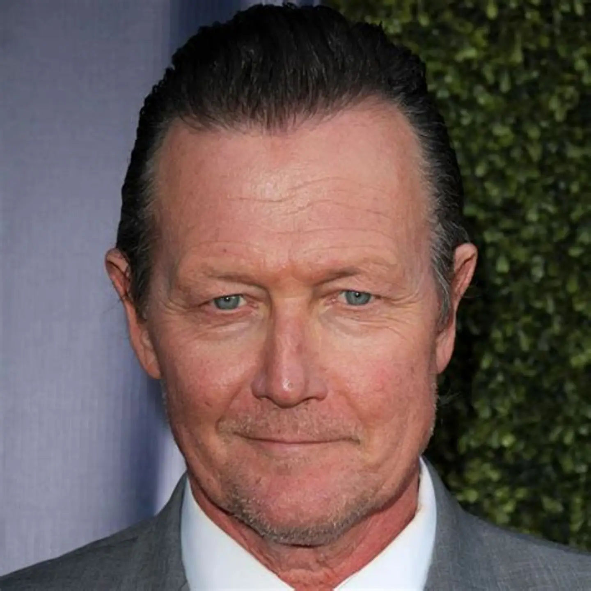

Senhor dos Aneis
Sinopse Geral
A franquia O Exterminador do Futuro (The Terminator) apresenta um futuro sombrio em que a humanidade é quase exterminada por uma inteligência artificial chamada Skynet, que desenvolve máquinas extremamente poderosas e inicia uma guerra contra os seres humanos. Para garantir sua vitória, a Skynet envia robôs assassinos, conhecidos como Exterminadores, ao passado com a missão de eliminar pessoas fundamentais para a resistência humana. Entre elas está Sarah Connor, cujo filho, John Connor, será o futuro líder da luta contra as máquinas. Ao longo dos filmes, acompanhamos diferentes tentativas de alterar o passado e impedir o futuro apocalíptico. John Connor cresce e se torna a principal esperança da humanidade, enquanto soldados humanos e máquinas são enviados através do tempo para proteger ou eliminar aqueles que podem mudar o destino do mundo. O mais interessante é que nem todos os Exterminadores são inimigos: alguns acabam sendo reprogramados para proteger os humanos, especialmente o icônico T-800, interpretado por Arnold Schwarzenegger. A saga aborda temas como inteligência artificial, destino, livre-arbítrio, sobrevivência e os perigos da dependência tecnológica. Entre batalhas intensas, viagens no tempo e confrontos entre humanos e máquinas, a grande questão que acompanha toda a franquia é: será possível impedir que a humanidade crie a própria destruição? Ou o futuro já está determinado, e a guerra contra as máquinas é inevitável?
Filmes






Elenco Principal

Arnold Schwarzenegger
T-800 / T-850

Linda Hamilton
Sarah Connor

Earl Boen
Dr. Peter Silberman

Michael Biehn
Kyle Reese

Robert Patrick
T-1000